SEPULTURA
Do Brasil
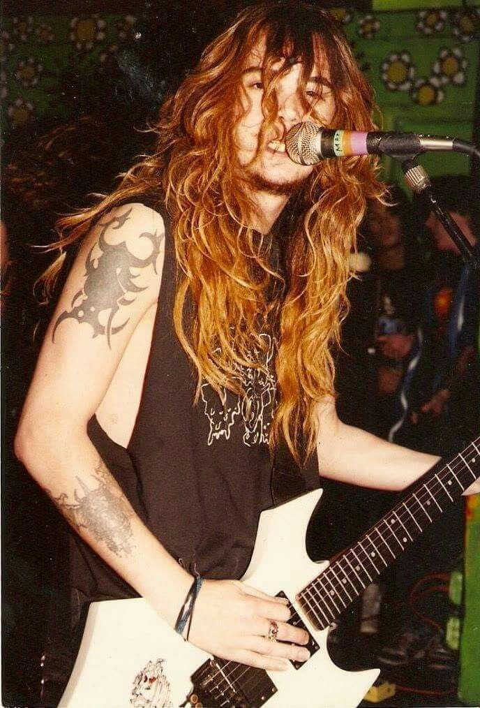
Max Cavalera
Max Cavalera cofundó la banda en 1984 en Belo Horizonte, Brasil, junto a su hermano menor Igor Cavalera. Durante su etapa en el grupo, que se extendió hasta diciembre de 1996, desempeñó un rol fundamental como vocalista principal y guitarrista rítmico.
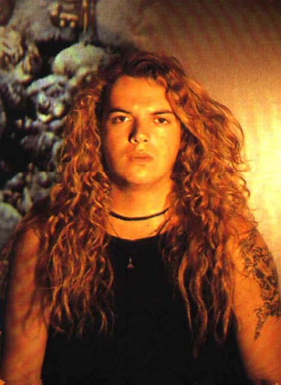
Iggor Cavalera
Cofundó el proyecto en 1984 en Belo Horizonte con su hermano Max. Estuvo hasta enero de 2006 como baterista y motor rítmico, guiando la evolución hacia quiebres tribales y consolidándose como un referente global del metal antes de su salida.
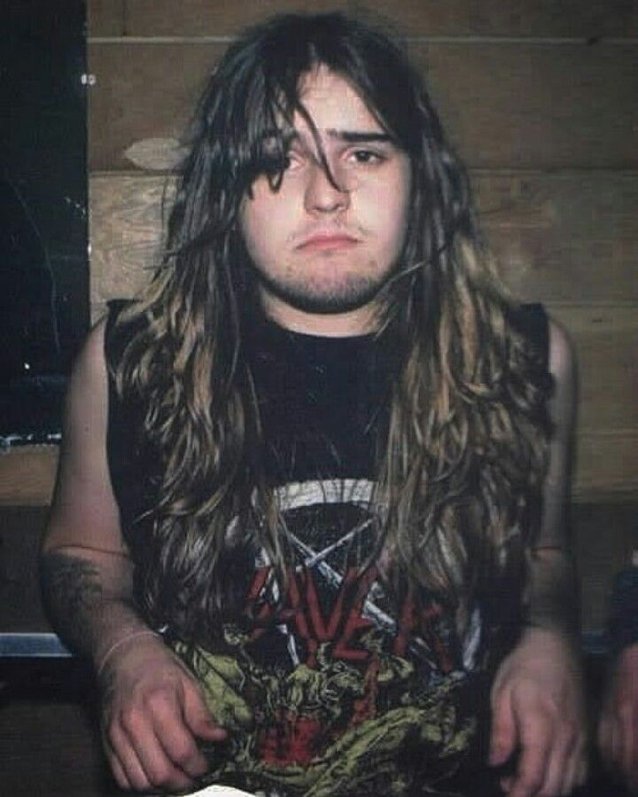
Andreas Kisser
Se incorporó al grupo en 1987 para Schizophrenia. Es guitarrista principal, compositor y líder tras la salida de los hermanos Cavalera. Su virtuosismo técnico y su rol en obras maestras del thrash metal fueron pilares determinantes.
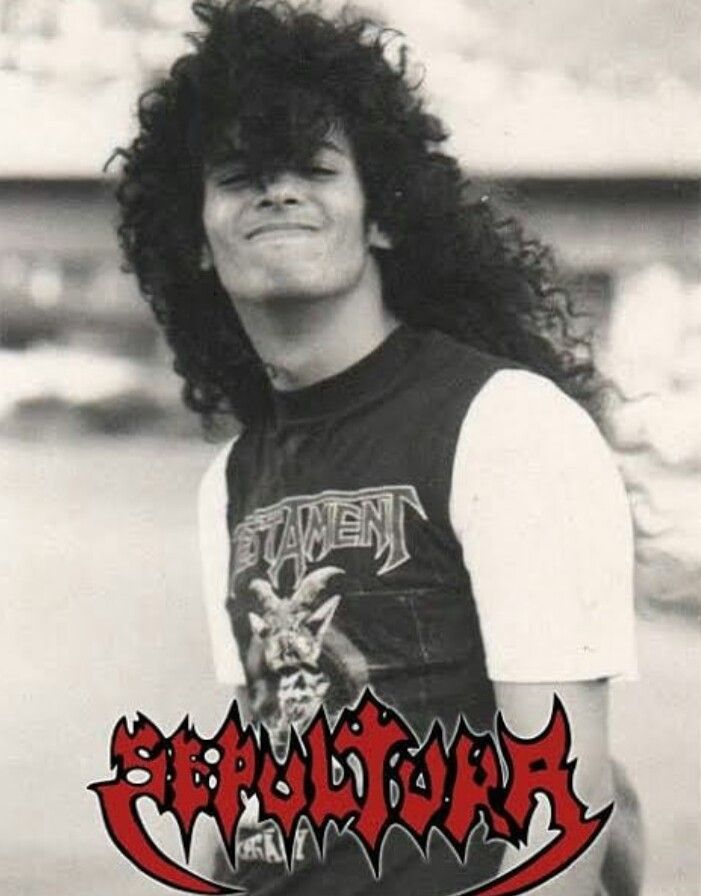
Paulo Jr
Se unió a la formación en 1984 en Belo Horizonte. A lo largo de toda su trayectoria ha sido el bajista y miembro con mayor permanencia ininterrumpida, aportando una sólida base en las frecuencias graves desde los inicios hasta hoy.
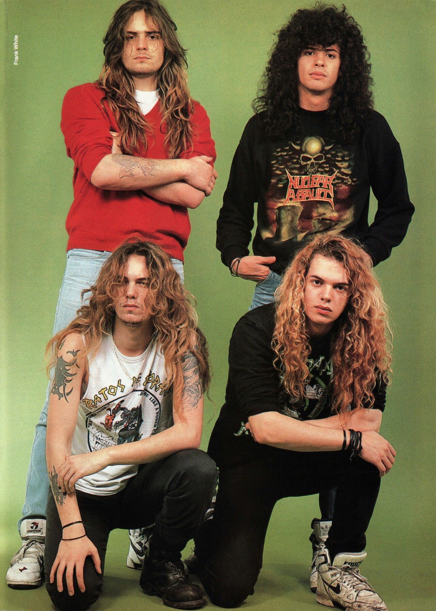
Sepultura 1990
En 1990 la banda vivía un momento consagratorio tras lanzar Beneath the Remains. Giraban internacionalmente y conquistaban la escena del death/thrash metal mundial, posicionándose como el gran referente de Sudamérica hacia la cima global.
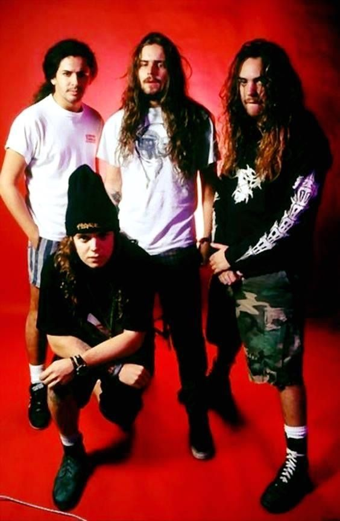
Sepultura 1994
En 1994 la banda transformó su furioso sonido thrash metal de Arise hacia un groove metal más denso y pesado en Chaos A.D. Con esto, giraban por todo el mundo y redefinían su potencia con una identidad única.
GALERIA DE DISCOS
En este apartado se encuentran muestras de las canciones mas iconicas de sus albumes (1985-1996)
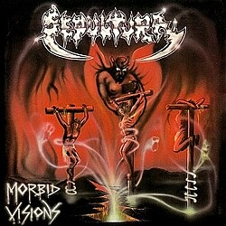
Ahora mismo estas escuchando "Troops of Doom" del album "Morbid Visions" (1985)
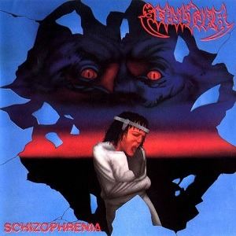
Ahora mismo estas escuchando "From the Past Comes the Storms" del album "Schizophrenia" (1987)
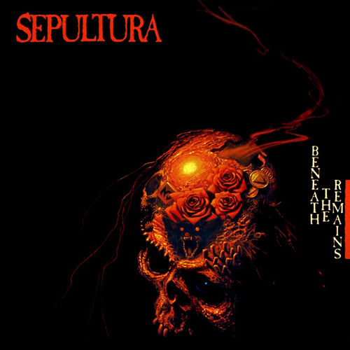
Ahora mismo estas escuchando "Inner Self" del album "Beneath the Remains" (1989)
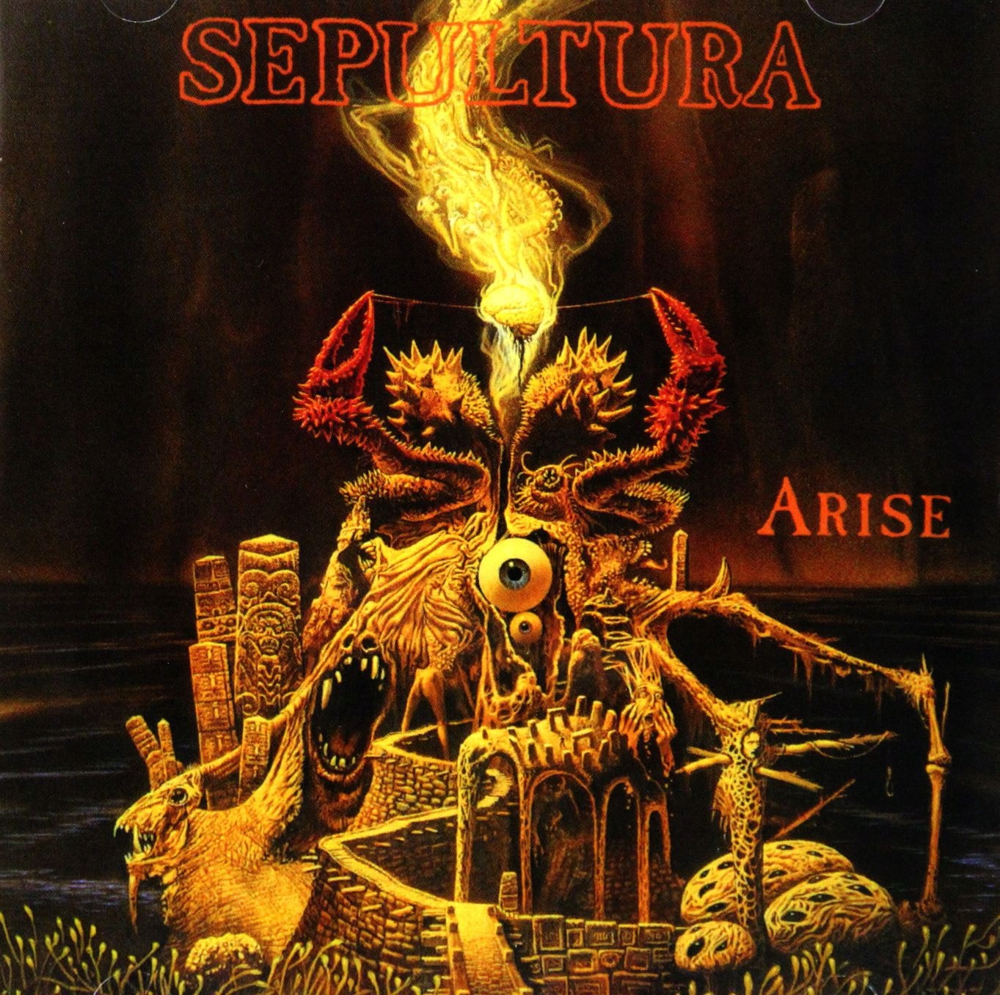
Ahora mismo estas escuchando "Dead Embryonic Cells" del album "Arise" (1991)
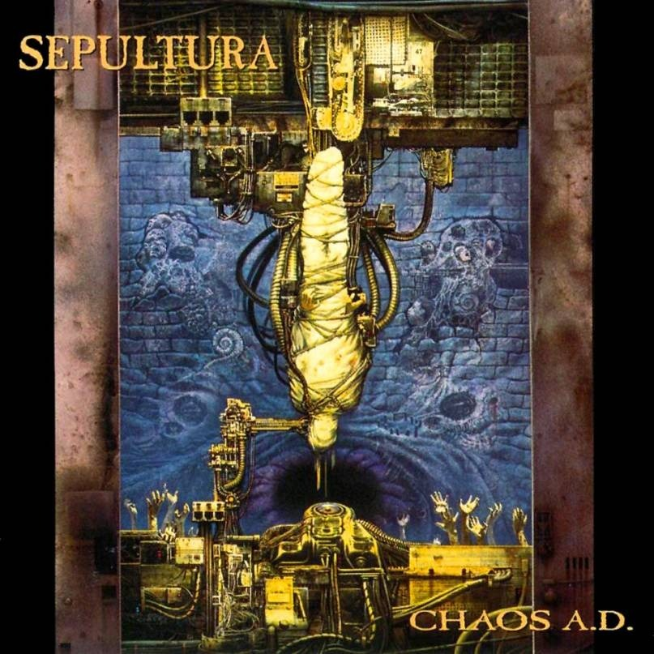
Ahora mismo estas escuchando "Territory" del album "Chaos A.D" (1994)
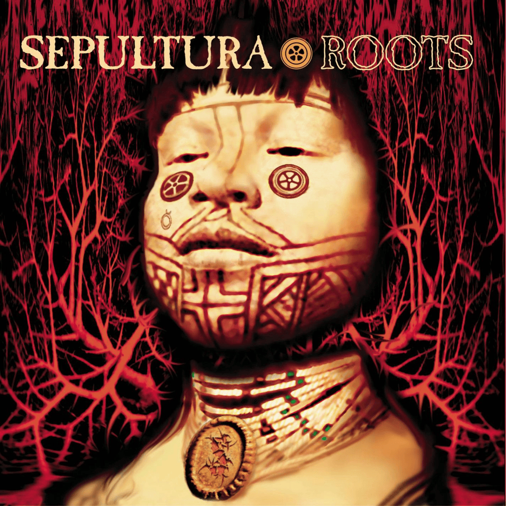